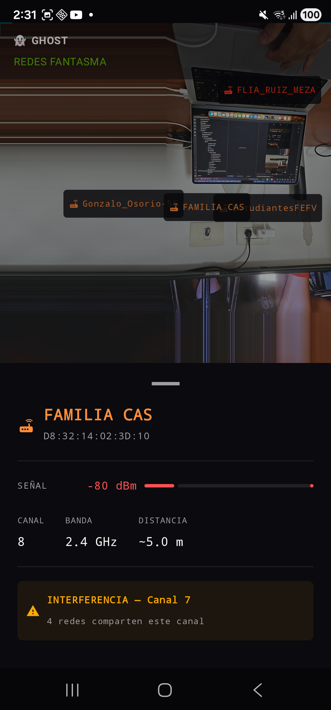
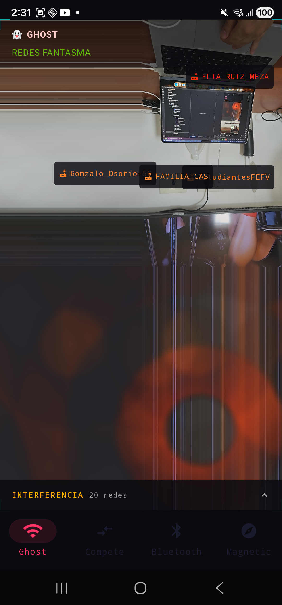
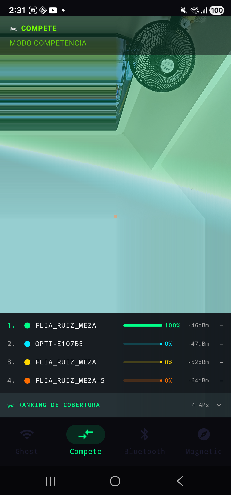
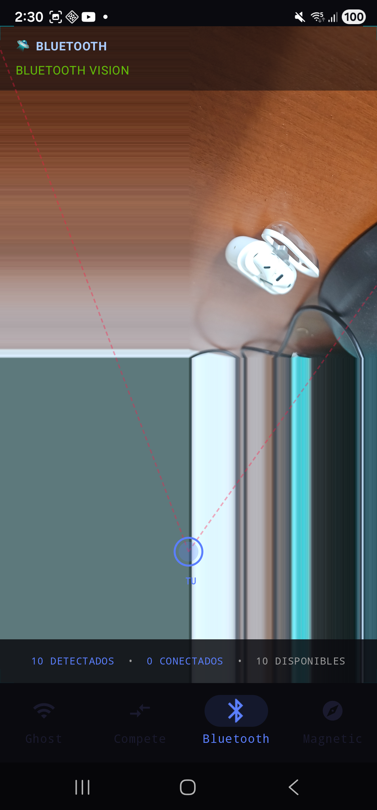
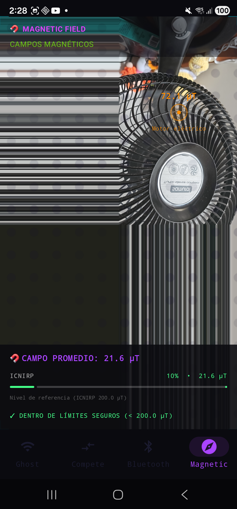

Visualizá el espectro electromagnético invisible en tiempo real con realidad aumentada. Cuatro modos de detección — WiFi, cobertura, Bluetooth y campo magnético.
Modos de visualización
Cada modo superpone datos de sensores reales sobre la cámara AR usando shaders OpenGL ES y overlays Compose.

Detecta y visualiza todas las redes WiFi del entorno como labels AR flotantes. Tocá cualquier red para ver su BSSID, señal en dBm, canal, banda estimada, distancia y alertas de interferencia de canal.

Tapeá un label AR para abrir el panel de detalle. Señal en tiempo real, barra de calidad de señal, y advertencia de canal si hay redes vecinas compitiendo en el mismo rango de frecuencia.

Rankeá redes WiFi por cobertura en tiempo real. Un scoreboard colapsable muestra el porcentaje de cobertura de cada AP, su señal en dBm y su posición relativa en el ranking.

Constelación AR de dispositivos Bluetooth cercanos. Cada dispositivo aparece como un nodo con línea punteada hacia el centro, diferenciado por tipo (auriculares, reloj, parlante, teléfono) y estado de conexión.

Visualización del campo magnético del entorno usando un shader OpenGL ES con grilla de puntos reactiva. Detecta anomalías en tiempo real y las clasifica según su fuente probable (motor, transformador, imán, cable con carga, etc.) usando un clasificador de firmas basado en reglas.
Stack técnico
Arquitectura limpia: cada modo tiene su ViewModel, Repository y OverlayRenderer independiente.
UI declarativa, navegación tipada, coroutines para flujo de sensores.
Sesión AR con lifecycle management. Tracking del espacio para posicionamiento de labels.
Shaders GLSL por modo — dot grids, blobs animados y efectos de campo.
Inyección de dependencias. ViewModels, repositories y session manager.
Flujo reactivo desde los sensores del dispositivo hasta la UI.
WiFi Scanner, Bluetooth LE, magnetómetro — APIs nativas de Android.
Cómo ejecutar
Requiere un dispositivo Android físico con soporte ARCore. No funciona en emulador.
Android 8.0+ (API 26) · ARCore compatible ·
Permisos: CAMERA, ACCESS_FINE_LOCATION, BLUETOOTH_SCAN.
Verificá compatibilidad en
developers.google.com/ar/devices.
git clone https://github.com/rich4rdruizgit/spectrum.git
Abrí el proyecto en Android Studio Hedgehog o superior.
Habilitá USB Debugging en tu dispositivo Android. Conectalo por USB o usá Wireless Debugging.
Seleccioná el target app y presioná Run (▶) en Android Studio,
o ejecutá ./gradlew installDebug desde la raíz del proyecto.
Al abrir cada modo por primera vez, la app solicita los permisos necesarios. Cámara requerida para AR · Ubicación para WiFi scan · Bluetooth para BT Vision.